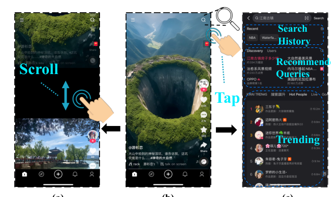
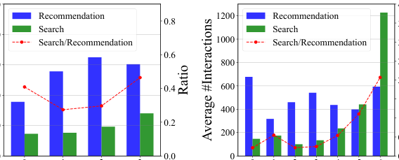

KuaiSAR: A Unified Search And Recommendation Dataset (统一搜索与推荐数据集)
- 会议/期刊: CIKM 2023 (Resource Track)
- 作者与机构: Zhongxiang Sun, Zihua Si, Xiao Zhang, Jun Xu (中国人民大学高瓴人工智能学院)；Xiaoxue Zang, Dewei Leng, Yanan Niu, Yang Song (快手科技)
- 推荐链路定位: 数据基座 / 端到端（召回—精排—重排全链路联合建模的评测底座）
- 研究方向: 工业级架构与评测基准 / 跨域多场景推荐
- 论文原文: https://arxiv.org/abs/2306.07705v4
- 开源代码: 暂未开源（数据集主页 https://ethan00si.github.io/KuaiSAR/，Zenodo: https://zenodo.org/record/8181109）
TL;DR (1分钟核心速览)
学术界做搜索-推荐（S&R）联合建模长期只能依赖私有工业日志或 Amazon 伪查询半合成数据。本文发布首个来自快手 App 的大规模真实统一 S&R 数据集 KuaiSAR：25,877 名双服务活跃用户、19 天、1,966 万条交互，首次记录“推荐流中发起搜索”的跨服务跳转与搜索入口来源，为意图推荐、S&R 互增强、多任务与多行为序列建模提供统一底座。
Background & Motivation (背景与核心矛盾)
- 主流范式: 工业界已把 S&R 视为一枚硬币的两面，采用统一模型、联合损失，或“以搜助推 / 以推助搜”的双向增强范式。
- 前人局限: ① 学术界只能用私有日志或半合成数据（Amazon 用商品元数据伪造 query），搜索行为是“编”出来的，任何“以搜助推”结论都可能被构造偏差放大；② JDsearch 虽真实，却把推荐与闲逛混为“非搜索行为”，既不区分场景，也不记录搜索入口是主动输入还是点击推荐词。
- 核心洞察 (Key Insight): 短视频 App 中两服务已互为入口——推荐流中点击放大镜即发起搜索，搜索页又回推 query（图 1）。真正稀缺的不是“两个域的数据”，而是用户在两域之间的意图跃迁轨迹。
- 本文切入点: 把跨服务跳转与入口来源当作一等公民埋点，开源真实日志，填补“学术界无统一 S&R 数据”的空白。

Method (核心方法设计)
1. 整体框架 (Overall Architecture)
KuaiSAR 的“方法”是一条数据构建流水线：先圈定 2023-05-22 至 06-10 期间同时使用过搜索与推荐服务的约 2.5 万用户（仅此一条过滤条件，不做 k-core，刻意保留活跃度长尾），再采集正向与负向交互、跨服务跳转标签、用户/物品侧信息与社交关系（576 用户有好友边），最后按发布政策做 ID 哈希、分词与敏感词剔除后匿名化落库。产物为 S-data 与 R-data 两个可对齐子集，共享同一批用户与统一时间轴。
flowchart TD
A["用户采样：19天内同时使用 S&R 的 25,877 用户"] --> B["行为采集：正/负反馈 + 跨服务跳转 + 入口来源"]
B --> C["侧信息：用户5维 / 物品18维 / 社交边"]
C --> D["匿名化：ID 哈希、分词、去敏"]
D --> E["KuaiSAR：S-data 506万 + R-data 1461万"]2. 关键设计拆解 (Key Designs)
- 跨服务跳转标签（
search/search_photo_related）：前作只能看到“用户在搜”，看不到“用户是被哪条推荐视频诱发的搜”。本文对每条推荐交互记录是否点击放大镜跳转搜索、query 是否与当前视频相关。形式化地，用户轨迹为 \(\mathcal{S}_u=[(a_1,s_1,\tau_1),\dots]\)，\(s_i\in\{\text{S},\text{R}\}\)，联合建模目标可写为\(\max\sum_u\sum_i\log P(a_{i+1}\mid a_{\le i},s_{\le i},\tau_{\le i})\)——场景标签\(s\) 与跳转标签共同回答“何时该跨域迁移兴趣”。 - 搜索入口来源细分：区分点击推荐 query、主动输入、点击热搜三类入口。这让 Intent Recommendation 从“预测一个 query 串”升级为“预测在何种入口下推何种 query”，也是唯一能评估“推荐激发搜索”这一闭环的数据。
- 真实负反馈与多行为标签：推荐侧保留“曝光但划走”的 skip，搜索侧保留“曝光未点击”，并附点赞/分享/关注/播放时长等 9 类反馈及时间戳。无需负采样即可还原真实曝光分布，直接支撑 CTR 校准、多任务学习与多行为序列建模。
3. 训练目标、负采样与推理效率
论文为资源论文，未给出模型、损失或负采样策略。笔记层面的推荐用法：以时间戳做全局时间切分防穿越；推荐任务用曝光未点击作真负样本 + 全库排序评估；跨域任务用 \(s_i\) 做场景门控（类似多场景模型中的场景塔）。
Experimental Setup & Evaluation Protocol (实验设置与评估协议)
- 数据集统计（原文 Table 1）:
| 子集 | #Users | #Items | #Queries | #Actions |
|---|---|---|---|---|
| S-data | 25,877 | 3,026,189 | 453,667 | 5,059,169 |
| R-data | 25,877 | 4,046,367 | – | 14,605,716 |
| 合计 | 25,877 | 6,890,707 | 453,667 | 19,664,885 |
- 过滤方式: 仅“窗口内同时使用过 S&R 服务”一条，无 5-core 截断，用户活跃度分布覆盖完整长尾。
- 数据划分与防穿越: 论文未提供官方 train/val/test 划分，仅提供带时间戳原始日志；使用者须自行按 \(\tau\) 做全局时间切分。
- 排名评测协议: 未内置 Full-Ranking 或 Sampled Ranking 基准，也未附 baseline 数值；作者仅列出可支撑任务清单（意图推荐、S&R 互增强、多任务、多行为序列）。
- 对比基线与超参: 无模型实验，故无 Embedding 维度、负采样比与显著性检验设置。
Key Experimental Results (实验关键数据)
1. 数据集横向对比 (Main Results，替代主实验)
| 属性 | MS MARCO | KuaiRec | Amazon | JDsearch | KuaiSAR |
|---|---|---|---|---|---|
| 真实 R-action | ✗ | ✓ | ✓ | ✓ | ✓ |
| 真实 S-action | ✓ | ✗ | 伪查询 | ✓ | ✓ |
| #Users | – | 7,176 | 192,403 | 173,831 | 25,877 |
| #Items | 8.8M | 10,728 | 63,001 | 12.9M | 6.89M |
| #Actions | 0.51M | 17.2M | 1.69M | 26.7M | 19.7M |
| 场景可区分 | – | – | ✗ | ✗ | ✓ |
| 跨服务跳转 | ✗ | ✗ | ✗ | ✗ | ✓ |
2. 消融实验 (Ablation Study)
不适用：本文不训练模型、无组件消融。等价“消融”体现为表 2 的属性逐项对比——去掉跳转标签即退化为 JDsearch，去掉真实搜索行为即退化为 Amazon 伪查询，去掉推荐行为即退化为 MS MARCO。
3. 关键实验发现 (Key Findings)
发现一：两域物品池几乎不重叠。 \(3.03\text{M}+4.05\text{M}-6.89\text{M}\approx18.2\) 万，交集仅占全库 2.6%。这意味着“以搜助推”的增益主要来自搜索 query 对长尾/冷启动物品的语义补全，而非热门物品的共现信号放大。
发现二：搜索行为稀疏但意图强度高。 推荐交互 1461 万 vs 搜索 506 万（约 2.9:1），人均推荐 564 次、搜索 195 次，平均每条 query 仅 11.1 次交互。结合图 2，推荐活跃度最高与最低组、以及高搜索活跃组的搜索占比反而更高——说明联合训练必须按活跃度分桶，否则会被推荐重度用户主导。

发现三：标签即任务，一份日志可导出三套监督。 9 类推荐反馈 + 双侧曝光未点击负样本 + 入口来源，使同一份数据可同时构造 CTR 预估、多任务多目标与意图推荐标签；相较 JDsearch 无法区分推荐/闲逛，这是最直接的可用性增量。
Highlights & Limitations (亮点、对比与审稿批判)
- 与代表作对比 (vs. Prior Work): vs Amazon——其搜索行为由商品元数据合成，联合建模结论天然有构造偏差；vs JDsearch——真实但非搜索行为不分场景，无法研究跳转；vs KuaiRec——仅覆盖推荐域。KuaiSAR 是唯一同时具备真实双域行为 + 场景标签 + 入口来源 + 跨服务跳转的数据。
- 可迁移亮点: ①“当前视频 → 是否触发搜索 → query 是否相关”的三元埋点范式，可直接迁移到电商详情页→比价/客服、内容页→外链等跨场景跳转建模；②保留曝光未点击的真负样本，避免负采样引入的流行度偏差，利于 CTR 校准研究。
- 审稿级局限批判: ①文本全量哈希为整数 ID，query 与视频标题无法还原，直接封死语义匹配、LLM4Rec 与跨模态预训练类研究，是最大硬伤；②仅 19 天、2.6 万用户且无官方划分与 baseline，跨论文可比性依赖社区自建 benchmark；③未提供曝光位置、排序位次等去偏必需字段，位置偏差仍会干扰 CTR 类结论。
Rating (四维评分)
- 方法创新性 (Novelty): ⭐⭐⭐ （非算法创新，但“跨服务跳转 + 入口来源”埋点在该数据集方向属首次，工程洞察强于理论贡献）
- 评估协议与实验扎实度 (Protocol & Experiments): ⭐⭐ （无官方划分、无 baseline、无显著性检验，资源论文属性明显，可比性需社区补建）
- 写作与数学规范度 (Clarity & Rigor): ⭐⭐⭐⭐ （统计口径、字段含义、与前作差异交代清晰，5 页短文信息密度高；缺形式化任务定义与复杂度讨论）
- 工业落地与复现价值 (Industrial & Practical Value): ⭐⭐⭐⭐ （真实工业日志 + 明确获取渠道，对 S&R 联合建模与意图推荐复现价值高；文本哈希化削弱可复用面）